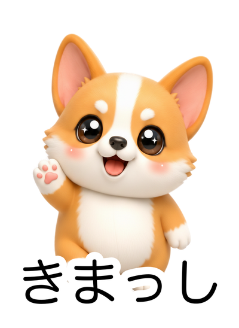
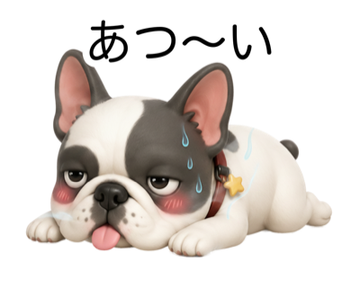
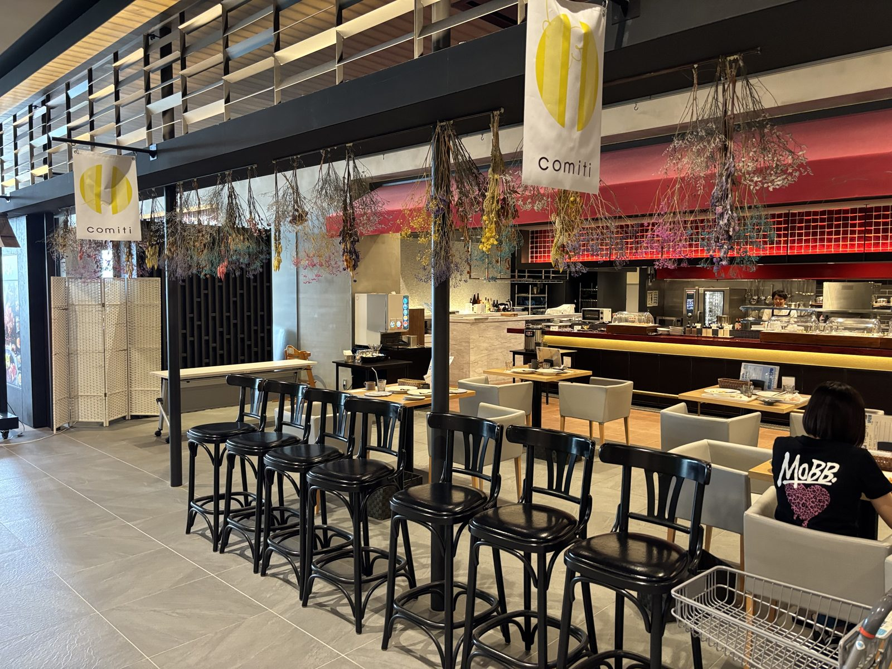
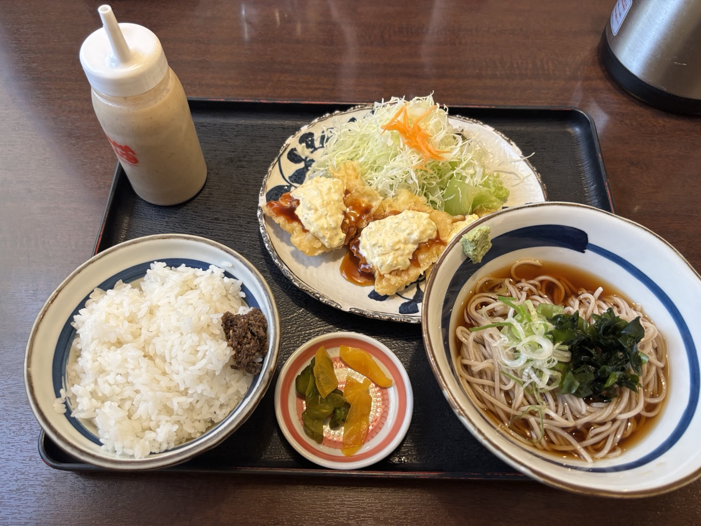

販売中

コギーの石川弁2
石川県の方言「金沢弁」をコギーが可愛くお届け！「きまっし」「あんやと」「がんばりまっし」など毎日使える石川弁が24種。ほっこり方言トークを楽しんで。
LINE STOREで見る →最新の活動はここでチェック！各SNSでも毎回お知らせしています🐾
制作実績とこれからの活動
オリジナルキャラクターによるLINEスタンプを企画・制作。日常・応援・スポーツ実演・特集など多彩なシリーズ、計30パック以上を LINE STORE で配信中。
Instagram・X(Twitter)・Threads でブログ更新やキャラの日常を発信。
Suno AIで制作したオリジナル楽曲をYouTubeで配信中。タキシード姿のコーギー＆シュナウザーが踊るかわいいポップソングをお届け。
🎉 全32パック展開中！日常・応援・スポーツ実演・特集シリーズなど多彩に展開

石川県の方言「金沢弁」をコギーが可愛くお届け！「きまっし」「あんやと」「がんばりまっし」など毎日使える石川弁が24種。ほっこり方言トークを楽しんで。
LINE STOREで見る →
「あつい」「むり」「とけそう」——夏バテフレブルが繰り出す脱力系の夏スタンプ24個。Frenchie Summer Daily。
LINE STOREで見る →
ふわっとかわいいコーギー「コギーちゃん」のきもちを24個に込めた、毎日使える定番スタンプ。
LINE STOREで見る →
白眉毛＆髭のミニチュアシュナウザー「ヒゲおじ」が一言でテンポよく会話を盛り上げる。
LINE STOREで見る →🎵 Suno AIで制作したオリジナル楽曲・BGMをYouTubeで全110本公開中！
夏の午後の古民家を舞台に、蝉時雨と風鈴の音を主役に琴と尺八を重ねた郷愁の和アンビエント。歌詞なしインスト60曲・約175分の3時間ロングバージョン。
YouTubeで聴く →「猫と昼寝の日曜日」と同じ歌詞・同じ楽曲の別テイク。夕暮れからこたつの夜へ、橙色の灯りの中で丸くなる猫を水彩で描いた別イラストMV。
YouTubeで聴く →カーテンごしの光、窓辺の日だまり、コーヒーの湯気――何もしない日曜日の午後が、こんなに愛おしいなんて。猫と過ごすなんでもない一日を水彩で描いた日本語オリジナルMV。
YouTubeで聴く →🍽️ 実際に行ったお店やスポットを、勝手に応援ファンページにして紹介する企画

#09イオンモール白山1階「グランシェフズキッチン」の、曜日でコンセプトが変わる学生レストラン。土日祝はシェフ監修のパスタが楽しめ、旬野菜とアサリのボンゴレビアンコとナスとベーコンのポモドーロをいただきました。

#08白山の伏流水で仕込む自然派熟成うどん「結」と超粗挽きそば「翠」が自慢のうどん・そば専門店。自家製タルタルソースたっぷりのチキン南蛮セットと、季節の野菜天がのったうどんをいただきました。
少しずつ広げていく活動